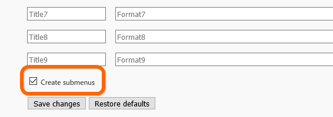
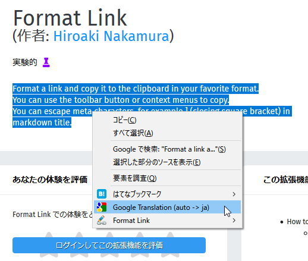
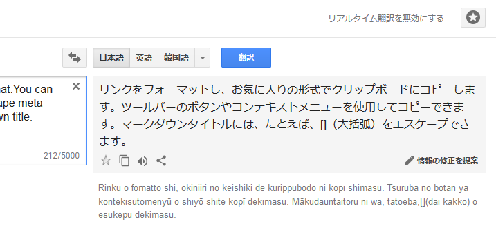

Firefox Quantum でつかってる拡張機能（2018年1月版）
執筆日時：
明日あたり Firefox Quantum のアップデートがくるのかな？ ってことは、Google Chrome から乗り換えてちょうどワンサイクル経ったってことか……最近はだいぶ慣れてきて、Chrome を起動することが少なくなってきたかも。これも拡張機能を作ってくれてる方々のおかげやね。
ってことで、感謝を込めて（←ナチュラルにディスってるところもあるけど、マジで感謝してるんだよ！）＆個人的な備忘のために自分が今使ってる拡張機能をさらしてみた。あんまりちゃんと説明する気がないので、詳しくはググってみてください。
Format Link – Firefox 向けアドオン
Google Chrome の Create Link 代替。正直 Create Link の方が使いやすい気がするけど、文句言うなら自分で作れやって感じだし、ありがたく使わせていただいてる。

個人的には、インストール後真っ先にこの↑オプションを有効にするのがお勧め。
Tab Center Redux – Firefox 向けアドオン
タブをサイドバーに表示するマン。ただそれだけだけど、自分は気に入ってる。タブバーよりページタイトルが見やすいし、あまり使わんけど、タブ検索とかも地味に便利。
でも、ウィンドウの上にタブバーがあるとついそっちも使っちゃうよな。いっそのこと非表示にできたらいいんだけど……Firefox 本体にはきっとそういう機能はないやろうなぁ（もしかしたら about:config とかに設定あるのかもしれんけど）。
Twitter自動画像拡大フィルタ – Firefox 向けアドオン
Twitter の画像を見やすくしてくれる。この手の拡張機能はいくつかあって、たぶんこれが最良というわけではないと思うけど、なんとなく惰性でつかってる。十分便利だし、これで満足（← 選定基準、割と適当なんだよね
Google Translation – Add-ons for Firefox
翻訳系のアドオンは1つほしいのだけど、どれもイマイチだった（ページ全訳とか要らないし、たまに単語の意味だけ引けたら十分なんだけど）。なんかおすすめがあったら教えてほしいぐらい。

自分はシンプルさ重視で、これを使っている。選択テキストを Google 翻訳に送ってくれるだけだけど、こういうので十分かな。高機能なのはいくらでもあるっぽいけど、どれもなんかしっくりこなかった。

あと、個人的に疑問なんだけど、AI で翻訳が賢くなったっていうの、みんな実感してんのかな。自分は割りとイマイチな印象しかないんだけど……いつもは英文斜め読みしながら、大事そうなところを精読するときの補助にこういうツールを使うが、逆の意味に翻訳することもしばしばだから、正直あんまり信用できん。もっとも、ページ全体の翻訳を多用すれば少しは違うのかもしれんけど。自分はどうしても細切れに使っちゃうから、文脈をうまくくみ取ってくれないのかもな（そういえば、日本語変換も細切れにやってしまうタイプだわ……老害はじまってるねｗ）。
Monitor websites for changes, get SMS alerts and email alerts - Distill
これは普通の人には不要かもしれないけど……ページの更新をチェックしてくれるツール。最近、フィードを配信していないサイト増えてない？ 仕方ないのでこういうので更新チェックをしている。
XPath で部分チェックすることもできるし、ブラウザーでレンダリングしてから評価するので、SPA みたいな動的なサイトでも一応使える。ヘッドレスブラウザーでごにょごにょすれば作れるかもしれんけど、自分は途中で飽きた。
ちなみに、自分はこれにお金払ってる（お金使って使ってんの、あとは Feedly ぐらい？）。チェックリストをデバイス間同期できるようになるので……まぁ、そういうのに興味がないならタダでも十分役立つと思う。
Hatena Bookmark – Firefox 向けアドオン
Chrome 版をそのまま Firefox で動かせるようにしましたって感じで、質はイマイチだけど、はてブジャンキーだから外せない。はてブやってない人には不要。
Chrome Store Foxified – Firefox 向けアドオン
Chrome ウェブストアの拡張機能を Firefox で使えるようにしてくれる……けれど、満足に動いた試しがあまりないかもしれない。今は入れてるだけの状態。まぁ、使い方ぐらいは覚えておくとよいと思う。たまに役立つかもしれんし。
https://forest.watch.impress.co.jp/docs/serial/yajiuma/758984.htmlforest.watch.impress.co.jp
おまけ
Firefox Quantum にしてやめたこと
- Feedly のピン留め：重い！ デスクトップクライアント Nextgen Reader を代わりに使う
- Outlook on Web のピン留め：なんかちょくちょくログアウトさせられてめんどい（なんでだ？）。代わりに Windows 10 の「メール」使ってる
Firefox Quantum にして気づいたこと
- Chrome の拡張を全部外したんだけど、フツーに速かった。でも、便利な拡張機能はついつい入れちゃうし……Firefox はちょい不便だけど、トータルでは（アドオンで重武装の）Chrome より速い
- たまにタブが暴走してる。Windows のタスクマネージャーから重いプロセスを殺して、Firefox で復元させてる
既定のブラウザーは Edge、メインは Firefox、補助で Chrome って感じでこの6週間（だっけ？）使ってきたけど、ぶっちゃけあんまりこだわりがないせいか、それほど不自由なく使えてる。っていうか、Edge 氏、もうちょい頑張ってくれ……